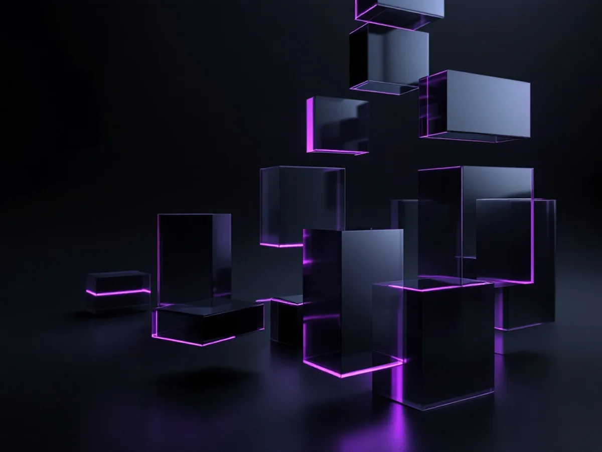
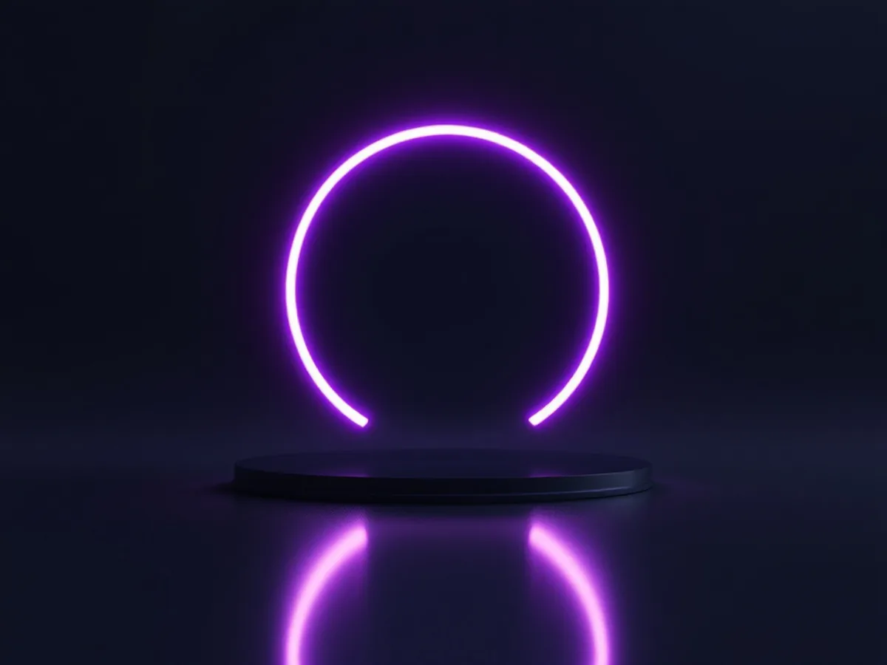
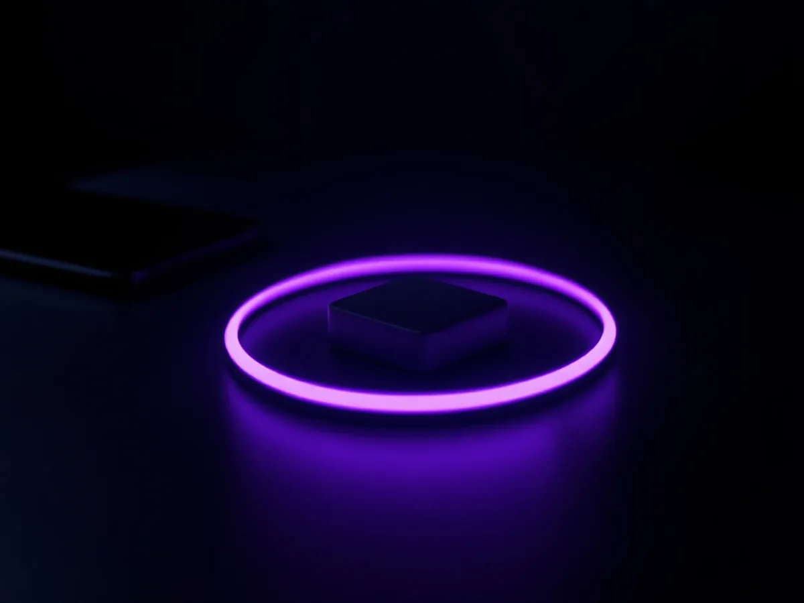
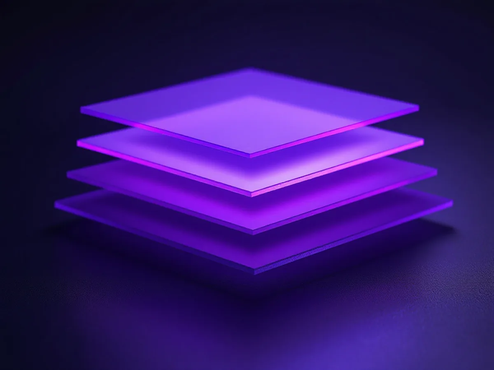

Unlike other agencies, we don't charge extra for web design and development services. Our focus is solely on providing you with a website that meets your specific needs and maximizes your online success. We go beyond the basics of website creation by offering a custom-built version of WordPress that is tailored specifically for dispensary retail operations.
Our custom Wordpress platform is optimized for performance, ensuring that your website loads quickly and efficiently. This is crucial in providing a seemless user experience and keeping visitors engaged. With our high-end and modern design approach, we create visually stunning websites that capticate your audience and reflect your brand's unique identity.
Conversion rate optimization (CRO) lies at the core of our web design and development process. We integrate proven strategies and tools into every website we build to maximize conversions and drive results. From intuitive navigation and compelling calls-to-action to optimized forms and persuasive product presentations, we leverage CRO techniques to turn visitors into loyal customers.
When you choose Dispenza for web design and development, you can expect a seamless and efficient process. Our timeline for designing and building custom websites on our platform is typically 1 -3 weeks, ensuring a swift launch and getting your online presence up and running in no time. We take pride in ongoing commitment to our clients, offering continuous website enhancements, additions, and edits at no additional cost.
Here's what sets our web design and development services apart:

01
Custom Wordpress Platform:
Our custom-built version of WordPress is specifically designed to meet the unique needs of dispensary retail operations. It combines high-performance capabilities with an intuitive and user-friendly interface.

02
Perfect Performance Scores:
Our websites achieve exceptional performance scores, ensuring fast load times, smooth navigation, and an optimical user experience.
03
Modern User Experience:
We create website that engage and delight your visitors and modern design elements, intuitive layouts, and seamless interactions. Every aspect of your website is carefully grafted to enhance user engagement and drive conversions.
04
Conversion Rate Optimization:
Our websites are build with conversion in mind. We implement proven CRO strategies and tools to maximize your website's ability to convert visitors into customers.

05
Timely Delivery:
With our efficient design and development process, we aim to launch your website within 1 -3 weeks, providing you with a powerful online presence quickly and effectively.

06
Ongoing Enhancements:
We believe in continuous improvement. We regularly update, enhance, and add new features to our clients' websites, ensuring they remain at the forefront of industry standards and user expectations.